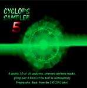

| Artist: | Various Artists |
| Title: | Cyclops Sampler 5 |
| Label: | Cyclops CYCL 125 |
| Length(s): | + minutes |
| Year(s) of release: | 2003 |
| Month of review: | [08/2003] |
| 1) | Rob Andrews - Lake Vinuela 2 | 6.15 |
| 2) | Flamborough Head - Limestone Rock | 10.24 |
| 3) | Guardians Office - Dark Girl | 6.32 |
| 4) | Henry Fool - Pills In The Afternoon | 5.43 |
| 5) | Karda Estra - The Projected Future | 4.29 |
| 6) | Lands End - Coming Down In Sheets | 10.24 |
| 7) | Manning - A Strange Place (live) | 5.00 |
| 8) | Mostly Autumn - Prints In The Stone | 4.46 |
| 9) | Mostly Autumn - Noise From My Head | 3.06 |
| 10) | Mysterkah - Red Daylight | 8.58 |
| 11) | Nice Beaver - Culley On Bleeker Street | 5.54 |
Disc 2:
| 1) | Odyssice - Scream (live) | 8.04 |
| 2) | Parallel Or 90 Degrees - Blues For Lear | 7.26 |
| 3) | Pineapple Thief - Variations On A Dream Pt 0 | 7.07 |
| 4) | Saens - Escaping From The Hands Of God Pt 2 | 7.13 |
| 5) | Sphere3 - An Unusual January (Monkeyfrog Mix) | 5.49 |
| 6) | Transience - No Turning Back Now | 10.55 |
| 7) | Tr3nity - Which Way | 13.59 |
| 8) | Twelfth Night - Fact And Fiction | 3.58 |
Flamborough Head - Limestone Rock: this is an alternate version, quite long too, in the melodic vein of the band, a friendly version of Genesis oriented symphonic rock. There is also something of Camel in here, and parts remind me of The Court Of The Crimson King. Compared to the previous song, this contains a wealth of melodies, in the vocal part alone. The flute helps to establish a Camel feel. The middle part is a very quiet and dreamy one, where the guitar slowly takes over. A dreamy song that breezes by.
Guardians Office - Dark Girl: this band, with Fruitcake's Pal Sovik, opens with acoustic guitar, and features low melodic vocals. There is a bit of mystery and tension as well. The vocals are a bit comparable at times to Roine Stolt's. Then more movement in the music: piano, a bit of guitar in the back, fuzzy, the drums are a bit lame. The closing guitar part does not add anything much. The song has a nice atmosphere.
Henry Fool - Pills In The Afternoon: the calm and soothing voice of No-Man's Bowness dominates this track, which is rather lullabyish with strumming strings and an easy gait. The song is quite close to recent No-Man efforts, which means that I like it. There is also a bit of mellotron and organ in here, in the instrumental middle part. At the very end we get some occasional guitar. Very good. And previously unreleased in any version.
Karda Estra - The Projected Future: this is also a song limited to this specific sampler. A light opening with acoustic guitar and some fairy like melodies. In the middle we have a passage strongly reminiscent of Hacketts Shadow Of The Hierophant. But this part is not repeated (as it is in Hackett's song).
Lands End - Coming Down In Sheets: this is a long one, and nice to hear from them again. The moody opening is no surprise, but already quite soon the keyboards set in for a more optimistic note. Something we have not come to expect of the band. But the vocal parts are depressing as ever, with plenty of meandering keyboards and powerful chords on guitar, punctuated by some pretty audible bass. The song is very live spun out feel. At the end the guitar gets to be quite noisy.
Manning - A Strange Place (live): this is a song originally from The Cure and now performed live by a six person band. The sound is indeed live, and clear. A very catchy plodding tune in fact, with a good groove and melodic. The typical voice of Guy Manning of course figures strongly.
Mostly Autumn - Prints In The Stone: two tracks by Mostly Autumn. The first one is the single version which was released on an EP, the second is Noise From My Head which featured on the limited edition of The Last Bright Light (and can in fact also be found on a recent compilation disc of the band). Prints In The Stone is a mellow folky vocal track, Noise From My Head is one of the rockiest and catchiest tracks the band ever made, though it opens quiet enough, and I like it a lot.
Mysterkah - Red Daylight: this French band are featured with an unreleased song. The band makes quite a good impression here, although I think they can improve on the recording of the vocal part. Sometimes she sounds similar to Heather Findlay of Mostly Autumn. However, this is typical symphonic rock with plenty of variation, you know the score. The keys can be a bit cheesy though.
Nice Beaver - Culley On Bleeker Street: this is an alternate version of the opening track of their album. This is quite an up-beat percussive piece. Very energetic and convincingly brought and sung.
We continue with disc 2. Odyssice - Scream (live): the third Dutch band on this label and this, I have to admit, is after its Assassin style intro, one of the jewels on this album, very intense and in the beginning very catchy too. The piano runs halfway sound familiar, from Iq's My Baby Treats Me Right... after which the melodic guitar solo sets in. If you like Camel in their guitar dominated tracks (Ice for instance) then you shall surely like this.
Parallel Or 90 Degrees - Blues For Lear: is a studio jam of this song from the Time Capsule. Strange that in some places this song is called Blues For Leah. A bluesy piano opens the song quietly. Think Portishead here. Until the vocal parts begin because Tillison is no Gibbons. The vocal melody is distinctive, but certainly not catchy. The warm blues feel stays. The piano is quite jazzy. Past halfway the guitar sets in for a fuzzy solo accompanied by some swirly synth solo's.
Pineapple Thief - Variations On A Dream Pt 0: is another track exclusive to this sampler. With 137 this band made a very good album, here they continue with an acoustic opening followed by a nice powerful build up to pacey rock in the line of Porcupine Tree: long guitar solo's, modern rhythms, British vocals.
Saens - Escaping From The Hands Of God Pt 2: this French band got good reviews for their debut album, but I was not that fond of their music. The vocals have something of David Bowie, the opening is quite relaxed and bouncy, later coming into an eruption on guitar and in the vocal section. Then we get an all-out keyboard solo section. Vocals intertwine in the middle section, a slow percussive passage, which gives way to a dramatic string synth dominated vocal part. Plenty of variation here and notwithstanding the many components and sections, maybe I ought to listen to their album again.
Sphere3 - An Unusual January (Monkeyfrog mix): the longest awaited album on Cyclops is Comeuppance by Sphere3 (Sphere to the third). This is a jazzrock outfit which is immediately clear from this single track. As such it is quite different from the dominantly neo-progressive styled bands on the label. Dancing piano, varying signatures, a bit of melody here and there, but also some meandering sections, I could not find much to make want more.
Transience - No Turning Back Now: a new album by Transience has just been released. This is a band with many of the Lands End members involved. The sound of this long track is quite close to the song by Lands End on the previous cd. Not so strange, because the vocals are quite dominant. Extensive solo's on the keyboards, a warm organ sound beneath it all. Moody and at times dramatic and powerful, this is a good one again. The piano has something of Sakamoto and Sylvian's Forbidden Colours. The song ends with spacey acoustic guitars.
Tr3nity - Which Way: is an alternate version of the track of their debut album. This is also the longest song on the sampler. It all starts our rather straightforwardly, with what seem to be triggered drums and a blues rock feel (guitar, vocals and female backing vocals). Some meandering keyboard solo's come in later, as do the blues rock styled guitar solos. After five minutes or so, the music winds down for some Shine On You Crazy Diamond styled guitar work. All rather dark and brooding here, with some bleepy keys cropping up now and then. Then the guitar sets in more definitely (just past the 10 minute mark that is) and the connection to Shine On becomes even more evident. I do like it though, the guitar playing. At the end the vocals return for an encore.
Twelfth Night - Fact And Fiction: again an alternative version, this time of a Thatcher/Cold War protest song. Lyrics drowning in irony, the sound is quite tinny and it can be heard well from what era this song arose. The drums especially sound very dry. Twelfth Night has a strong tendency for New Wave at some points, although Mann's voice is often a bit too emotional/aggressive for that. The song does lack the vocal introduction.
Vulgar Unicorn - Gliders: the final track is a new one again, by Pineapple Thief related Vulgar Unicorn, one of the more creative bands on the label, in the sense that they are looking for new ways to make progressive music. Although the song is new, it is supposed to end up on their upcoming album, but in a somewhat different version. A song that is slow to start, only after three minutes or so does percussion enter the picture. It seems to me the band is moving more in the direction of Porcupine Tree. There is also something of Faithless in here, at times. We get quite rowdy a finale.